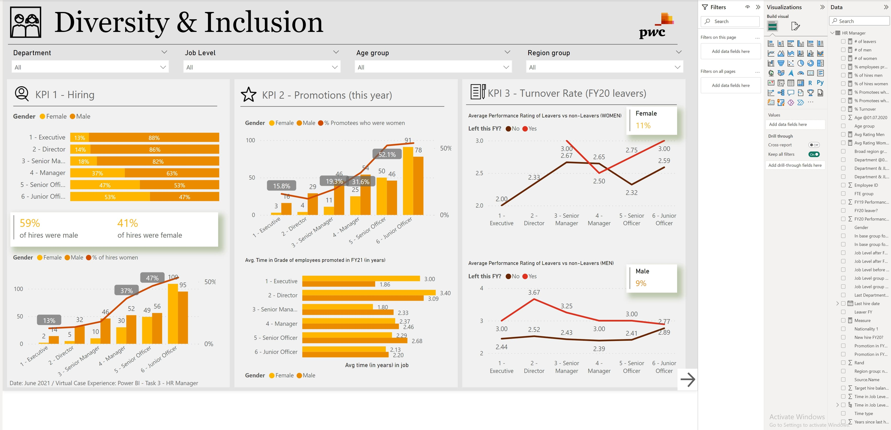

Problem Statement : Understand the target customer for the marketing team to plan a strategy successfully for the company. The Approach Used:
1) Perform some quick EDM(Exploratory Data Analysis),
2) Use KMEANS Clustering Algorithm to create our segments,
3)Use Summary Statistics on the clusters,
4)Visualize and Recommendations(conclusions),
5)Create PDF Report


In this Project I have analyzed Bike Sales Store Datasets using Python & SQL and build the real time Power BI Dashborad. The Breakdown Project Outline:
1. Load Bike Sales Store Data in Google colab,2. The data at a glance,3. Numerical analysis and visualization,4. Categorical analysis and visualization,5. Relationship between the columns?,6. Column wrangling, 7. Selection & Indexing:,8. Convert jupypter Notebook to --HTML & PDF Report,
9. Copy the colab notebook to Github.

In this project I poll cryptocurrencies prices from public API from Crypytowatch and Bitcoin website and download them as Excel files Using two important libralies such Requests (to poll data from web) and Pandas to process it.

In this project I trained and tested models that could predict the likelyhood of patients to affected by any chronic diseases such Breast Cancer,Heart attack,Parkinsons,Diabetes, and Stroke as well I achiaved the accuracy results for 92.55% and model deployed successfully to streamlit website

In this project I anlyzed datasets for hotels group and build interactives power BI website to keep tracking their income for both two hotels. Build a Visual Resort Hotels Data Story & Real-Time Dashboard Using Power BI to Present to your Partners or Stakeholders.
Breakdown Questions:
1) Is Our hotel Revenue growing by year?
2) Should we increase our parking lot size ?
3) What trends can we see in our data?
Project Pipeline :
1) Build a Database using Microsoft SQL Server Management Studio
2) Develop the SQL Query,
3) Connect Power BI to the Database
4) Visualize
5) Summarize the Findings.

This application uses the daily Coronavirus updates provided by the Rwanda's Ministry of Health and provide the summary, distribution, growth, and trends of cases in interactive way. It also provide links to some recent news gathered from the NewsApi. I am planning to add the section which shall help to predict/forecast new cases for several days ahead.

Many banks are commending their internet banking and mobile banking applications because not only they can save customers time but also they can help in coping with Coronavirus spread. I did the sentiment analysis of the users reviews of 10 different Android and iOS mobile banking applications from 10 different banks in Rwanda left on both Google Play Store and Apple Store before 2020 and after 2020 to see whether customers are leaving Negative or Positive reviews.

In this project, data from housing was cleansed using SQL queries in Microfoft Server Management Studio, and the project was broken down.
1) Set Up Server Name in your SQL Studio
2) Access your data
3) Cleaning Data depend for the specific column --> Convert The Date Format into Standardized Date Format
4) Populate The property Address Data
5) Breaking Property Address into Individual into Columns(Address,City,State)
6) Change Y and N to Yes and No in the Selected Column
7) Remove duplicate in Datasets
8) Remove Unsued Column
9) Push Your Project to Github.

Data Analyst Portfolio Project : Movie Correlation Project with Python
🗾 the primary objective of this project was to identify the corporation that exhibits the strongest correlation when comparing various factors. Specifically, our focus was on examining the relationship between movie budget and gross earnings.
➗ Through extensive analysis, including the generation of multiple correlation plots, we were able to uncover insightful findings. Notably, I observed that factors such as runtime and votes displayed the highest correlation coefficient of 0.515308. This indicates a significant positive relationship between these variables, suggesting that movies with longer runtimes and higher vote counts tend to have a stronger impact on overall gross earnings.
➖ By delving into these correlations, we gain valuable insights into the key factors influencing the financial success of movies. Such knowledge can assist stakeholders in making informed decisions regarding budget allocation and strategic planning, ultimately contributing to the overall success of the corporation.
Therefore In this project various things has been done such
🔘 1)Importing certain libraries
🔘 2)Dealing with Columns has Missing Data
🔘 3)Check Data types for Each column
🔘 4)Change Column Datatype
💠 5)Creating Correct_year Column match with Released Date
💠 6)Sorting Gross Column by ascending
💠 7)Displaying all Column at Once
💠 8)Drop Duplicates column
💠 9)Scotter plot between Gross and Budget
💡 10)Plot Budget VS Gross using Seaborn
💡 11)Correlation
💡 12)Converting all Columns in Numerical

Here's a step-by-step outline project process for how I scraped product data from Amazon using Python:
1. Install Required Libraries:
- Install the necessary libraries: `selenium`, `beautifulsoup4`, and `webdriver_manager`.
2. Set Up WebDriver:
- Import the required modules: `webdriver` from Selenium and `webdriver_manager` for managing the WebDriver.
- Set up the WebDriver using `webdriver.Chrome()` or the appropriate driver for your browser.
- Optionally, configure the WebDriver options (e.g., headless mode, proxy settings).
3. Navigate to the Product Page:
- Use the WebDriver's `get()` method to navigate to the product page URL on Amazon.
4. Extract the Page Source:
- Retrieve the page source using `driver.page_source` and store it in a variable.
5. Close the WebDriver:
- Close the WebDriver using `driver.quit()` to free system resources.
6. Parse the HTML:
- Import `BeautifulSoup` from the `bs4` library.
- Create a `BeautifulSoup` object by passing the page source and the parser (e.g., "html.parser") to it.
7. Find and Extract Product Information:
- Inspect the HTML structure of the product page to identify the relevant elements.
- Use BeautifulSoup's methods to find and extract the desired information (e.g., product title, price) from the parsed HTML.
8. Process and Store the Data:
- Process the extracted data as needed (e.g., remove unwanted characters, convert to appropriate data types).
- Store the data in a suitable data structure (e.g., variables, lists, dictionaries) for further processing or analysis.
9. Save the Data:
- Use the `csv` module or other appropriate methods to save the extracted data to a file (e.g., CSV, Excel, database).

The following questions were addressed for Sales Company, which sells electronics products in the United States, using Pandas in Project Jupyter.
Using Pandas, the List of Questions Business had was resolved.
📉 1).What was the Best a Month for Sales? How much was earned in that Month
📊 2).What a city has the highest number of sales
📉 3).What products are most often sold together
📈 4).What time should we advertizements products to maximize the likelyhood of customers to buying products ?
📈 5).What are product are sold ? and why it sold most¶

This dashboard demonstrates how we used two datasets for IBM employees to illustrate how various factors affect why employees leave the firm. For this project, you can access my public Tableau on button below:

This dashboard demonstrates how we used two datasets for Sprocket Central Pty Ltd to illustrate how various factors affect Their firm. For this project, This project composed by three main task
Task 1: DATA QUALITY ASSESSMENT:Document assumptions, limitations and exclusions for the data; as well as how you would further improve in the next stage if there was additional time to address assumptions and remove limitations.
Task 2: MODEL DEVELOPMENT:Determine a hypothesis related to the business question that can be answered with the data. Perform statistical testing to determine if the hypothesis is valid or not
Task 3: INTEPRETATION AND REPORTING:Visualisation and presentation of findings. This may involve interpreting thesignificant variables and co-efficient from a business perspective.

Power BI Use of Visulization analytics tools to help the telecom company get to know and understand their customers better much better. when your business is highly competative
primarily Audio no matter how you tuned in you're its difficult to see what really going on. preparing dashboard visualize the strength the center manager, telecom company
has been losing customers and we need to keep them again.Apply Power BI skills could help for Human Resource (HR) to understand clearly and to-knoow-how.
Create a dashboard in Power BI for Claire that reflects all relevant Key Performance Indicators (KPIs) and metrics in the telecom dataset.
Possible KPIs include (to get you started, but not limited to):
😍 Overall customer satisfaction
😗 Overall calls answered/abandoned
🕔 Calls by time
🕓 Average speed of answer
Agent’s performance quadrant -> average handle time (talk duration) vs calls answered

Define proper KPIs
Create a dashboard for the retention manager reflecting the KPIs
Write a short email to him (the engagement partner) explaining your findings, and include suggestions as to what needs to be changed
Possible KPIs include (to get started, but not limited to)
1) Customers in the telecom industry are hard-earned: They don’t want to lose them.
2) The retention department is here to get customers back in case of termination.
3) Currently, They get in touch after they have terminated the contract, but this is reactionary: it would be better to know in advance who is at risk.
4) They have done customer analysis with Excel: it has always ended in a dead-end.
5) They would like to know more about our customers: visualised clearly so that it’s self-explanatory for our management.
6) The Retentions Manager has provided some information in the resources to you.

Define Diversity KPIs
Human Resources at our telecom client is highly into diversity and inclusion. They’ve been working hard to improve gender
balance at the executive management level, but they’re not seeing any progress. They’re reaching out to us for help.
At PwC Switzerland we are often approached by clients seeking support with diversity and inclusion.
Companies need a workforce of diverse talents and backgrounds to succeed in an increasingly complex and heterogeneous world.
To us, diversity and inclusion are business imperatives,not just nice-to-haves. We aim for all of our teams to feel welcome and appreciated.
But actually achieving this and unlocking its potential involves a whole set of practical challenges.
What I did
Create visualizations to represent HR data, particularly focusing on gender-related KPIs.
Identify and discuss potential root causes for the slow progress in achieving gender balance at the executive management level.
********Task 1 : Web scraping to gain company insights ********
Here is your task Scrape data from the web The first thing to do will be to scrape review data from the web. For this, you should use a website called Skytrax.
The team leader wants you to focus on reviews specifically about the airline itself. You should collect as much data as you can in order to improve the output of your analysis. To get started with the data collection,
you can use the “Jupyter Notebook” in the Resources section below to run some Python code that will help to collect some data.
Analyse data Once you have your dataset, you need to prepare it. The data will be very messy and contain purely text. You will need to perform data cleaning in order to prepare the data for analysis.
When the data is clean, you should perform your own analysis to uncover some insights. As a starting point, you could look at topic modelling, sentiment analysis or wordclouds to provide some insight into
the content of the reviews. It is recommended to complete this task using Python, however, you can use any tool that you wish. You can use some of the documentation websites provided in the Resources section
below to analyse the data.Please ensure that you have created a folder called "data" and mapped your file path.
Present insights Your manager would like you to summarise your findings within a single PowerPoint slide, so that they can present the results at the next board meeting. You should create visualisations and metrics
to include within this slide, as well as clear and concise explanations in order to quickly provide the key points from your analysis. Use the “PowerPoint Template” provided to complete the slide.
********Task 2: Predicting customer buying behaviour*******
Here is your task Explore and prepare the dataset First, spend some time exploring the dataset in the “Getting Started” Jupyter Notebook provided in the Resources section below to understand the different columns and some basic statistics of the dataset. Then, you should consider how to prepare the dataset for a predictive model. You should think about any new features you want to create in order to make your model even better. You can make use of the Resources provided to get you started with this task.
Train a machine learning model When your data is ready for modelling, you should train a machine learning model to be able to predict the target outcome, which is a customer making a booking. For this task, you should use an algorithm that easily allows you to output information about how each variable within the model contributes to its predictive power. For example, a RandomForest is very good for this purpose.
Evaluate model and present findings After training your model, you should evaluate how well it performed by conducting cross-validation and outputting appropriate evaluation metrics. Furthermore, you should create a visualisation to interpret how each variable contributed to the model. Finally, you should summarise your findings in a single slide to be sent to your manager. Use the “PowerPoint Template” provided in the Resources section below to create your summary and make use of the links provided to help with this task.
It is recommended that the analysis portion of this task is done in Python.
********What I did ********
1-Step:I collected rich of data as I can by web scrapping from SKYtrax(https://www.airlinequality.com/) in order to improve the output of my analysis
2-Step:I cleaned data to prepare the data for analysis and Analyse It
3-Step:I performed my own analysis to uncover some insights by modelling, sentiment analysis to provide some insight into the content of the reviews.
4-Step:I Present insights To manager by summarising my findings within a single PowerPoint slide which is attached on this project
5-Step:I prepared the dataset for a predictive model
6-Step:I discovered new features(Booking_coplete) created in order to make my model even better
7-Step:I Trained a machine learning model and evaluating how well it performed by conducting cross-validation and outputting appropriate evaluation metrics
8-Step:I created a visualisation to interpret how each variable contributed to the model
9-Step:I made summary of my findings in a single slide to be sent to my manager
PowerCo is a major gas and electricity utility that supplies to corporate, SME (Small & Medium Enterprise), and residential customers. The power-liberalization
of the energy market in Europe has led to significant customer churn, especially in the SME segment.
They have partnered with BCG to help diagnose the source of churning SME customers.A fair hypothesis is that price changes affect customer churn.
Therefore, it is helpful to know which customers are more (or less) likely to churn at their current price, for which a good predictive model could be useful.
Moreover, for those customers that are at risk of churning, a discount might incentivize them to stay with our client.
The head of the SME division is considering a 20% discount that is considered large enough to dissuade almost anyone from churning (especially those for whom price is the primary concern).
These are the following Tasks supposed I worked on as Data Scientist:
1.Task 1: Business Understanding and hypethesis Framing
2.Task 2: Explarotory Data Analysis
3.Task 3: Feature Engineering and Modelling
4.Task 4: Findings and Recommendations
.jpg)
Responsible AI is top of mind for business leaders, along with an urgent need to understand the decision process behind these algorithms. With great potential comes great risk. Not being able to understand an AI system can lead to a “black box” effect, which limits an organisation’s ability to explain and defend business-critical decisions.
PwC’s Responsible AI approach can help. We provide services to help explain both overall decision-making and also individual choices and predictions, tailored to the perspectives of different stakeholders.
Jakob, is your team manager, is keen to meet you. Ready to hit the road? Our first stop is Geneva. Here’s an overview of the project and what I need you to do.
A large bank has asked us to evaluate the marketing algorithms they use for retail banking. Their sophisticated phone marketing algorithm predicts whether a certain person will subscribe to a term deposit or not. Based on that assessment, the bank then optimises its phone calling strategy. With this algorithm, the bank has been successful in predicting which clients are more likely to subscribe to their term deposits.
Management is now interested in finding out how a classification model can lead to certain decision-making processes.
These are the following Tasks supposed I worked on as Digital Intelligence Expert:
Task 1: Create a classification model in Python. Feel free to use libraries such as SkLearn, Keras/Tensorflow or Pytorch.
Task 2: Analyse the model and provide insight into which features/variables influence the outcome of the classification the most: on a global level, and specifically for observation #4 and #20.
Task 3: Develop some form of plot or graph with brief comments on your observations.
Task 4: Heads up! Jakob left you a voice message to help you with this task.
Responsible AI is top of mind for business leaders, along with an urgent need to understand the decision process behind these algorithms. With great potential comes great risk. Not being able to understand an AI system can lead to a “black box” effect, which limits an organisation’s ability to explain and defend business-critical decisions.
PwC’s Responsible AI approach can help. We provide services to help explain both overall decision-making and also individual choices and predictions, tailored to the perspectives of different stakeholders.
Jakob, is your team manager, is keen to meet you. Ready to hit the road? Our first stop is Geneva. Here’s an overview of the project and what I need you to do.
A large bank has asked us to evaluate the marketing algorithms they use for retail banking. Their sophisticated phone marketing algorithm predicts whether a certain person will subscribe to a term deposit or not. Based on that assessment, the bank then optimises its phone calling strategy. With this algorithm, the bank has been successful in predicting which clients are more likely to subscribe to their term deposits.
Management is now interested in finding out how a classification model can lead to certain decision-making processes.
These are the following Tasks supposed I worked on as Digital Intelligence Expert:
Task 1: Create a classification model in Python. Feel free to use libraries such as SkLearn, Keras/Tensorflow or Pytorch.
Task 2: Analyse the model and provide insight into which features/variables influence the outcome of the classification the most: on a global level, and specifically for observation #4 and #20.
Task 3: Develop some form of plot or graph with brief comments on your observations.
Task 4: Heads up! Jakob left you a voice message to help you with this task.